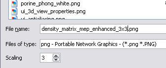

Images are generated by selecting the File -> Save image menu item or by pressing the camera button in the toolbar.
The size of the 3d view is shown in the status bar when the main window is resized;

The size of the 3d view can also be manually set through the Display -> 3d View properties dialog
After the save dialog opens select the file name, format and adjust the scaling factor to generate images bigger than the current graphics window.

NOTE: Before exporting a magnified image (i.e. scaling factor > 1) make sure that both axis and scalar bar are not visible.